Files and Software
Introduzione all’analisi RNASeq in R
Dipartimento di Biomedicina e Prevenzione
Marco Chiapello, Revelo Datalab
2023-03-31
Files
Diversi tipi di file
FASTA file
Definizione
Il Formato FASTA è un formato di testo per rappresentare le sequenze nucleotidiche o le sequenze aminoacidiche. Sia i nucleotidi che gli aminoacidi sono rappresentati da una singola lettera. Sulla prima linea antecedente alla sequenza nucleotidica/aminoacidica viene riportato il nome della sequenza, preceduto dal simbolo “>”
I file contenenti queste sequenze possono avere varie desinenze: fasta, fna, ffn, faa, fa, frn
Diversi tipi di file
FASTA file
Definizione
Il Formato FASTA è un formato di testo per rappresentare le sequenze nucleotidiche o le sequenze aminoacidiche. Sia i nucleotidi che gli aminoacidi sono rappresentati da una singola lettera. Sulla prima linea antecedente alla sequenza nucleotidica/aminoacidica viene riportato il nome della sequenza, preceduto dal simbolo “>”
>NM_001404729.1 Oryza sativa ribulose bisphosphate carboxylase small chain A
CTCAACAGCACTGCTACTGGACATACTCTACTACTACTAGCCAGTAAGCTAGCTAACTAACTACGTGGCT
ATGGCCCCCACCGTGATGGCCTCCTCGGCCACCTCCGTGGCTCCATTCCAAGGGCTCAANNNNNNNNNNNDiversi tipi di file
FASTA file
Definizione
Il Formato FASTA è un formato di testo per rappresentare le sequenze nucleotidiche o le sequenze aminoacidiche. Sia i nucleotidi che gli aminoacidi sono rappresentati da una singola lettera. Sulla prima linea antecedente alla sequenza nucleotidica/aminoacidica viene riportato il nome della sequenza, preceduto dal simbolo “>”
>MCHU - Calmodulin - Human, rabbit, bovine, rat, and chicken
MADQLTEEQIAEFKEAFSLFDKDGDGTITTKELGTVMRSLGQNPTEAELQDMINEVDADGNGTID
FPEFLTMMARKMKDTDSEEEIREAFRVFDKDGNGYISAAELRHVMTNLGEKLTDEEVDEMIREA
DIDGDGQVNYEEFVQMMTAKXXXXXXDiversi tipi di file
FASTA file
È possibile creare dei file che contengano più sequenze concatenando singoli FASTA file.
>MCHU - Calmodulin - Human, rabbit, bovine, rat, and chicken
MADQLTEEQIAEFKEAFSLFDKDGDGTITTKELGTVMRSLGQNPTEAELQDMINEVDADGNGTID
FPEFLTMMARKMKDTDSEEEIREAFRVFDKDGNGYISAAELRHVMTNLGEKLTDEEVDEMIREA
DIDGDGQVNYEEFVQMMTAK
>gi|5524211|gb|AAD44166.1| cytochrome b [Elephas maximus maximus]
LCLYTHIGRNIYYGSYLYSETWNTGIMLLLITMATAFMGYVLPWGQMSFWGATVITNLFSAIPYIGTNLV
EWIWGGFSVDKATLNRFFAFHFILPFTMVALAGVHLTFLHETGSNNPLGLTSDSDKIPFHPYYTIKDFLG
LLILILLLLLLALLSPDMLGDPDNHMPADPLNTPLHIKPEWYFLFAYAILRSVPNKLGGVLALFLSIVIL
GLMPFLHTSKHRSMMLRPLSQALFWTLTMDLLTLTWIGSQPVEYPYTIIGQMASILYFSIILAFLPIAGX
IENY*Diversi tipi di file
FASTA file
Nucleotidi
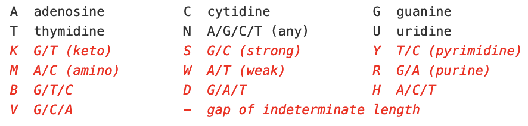Diversi tipi di file
FASTA file
Aminoacidi
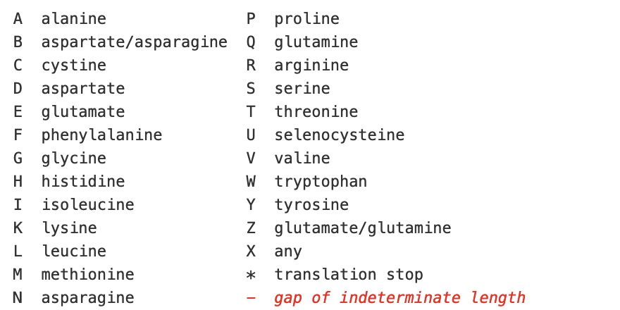Diversi tipi di file
FASTQ format
Definizione
Il formato FASTQ è un formato di testo per rappresentare sia le sequenze biologiche (normalmente nucleotidiche) sia il corrispettivo valore di qualità. Sia le sequenze che lo score di qualità sono codificati da una singola lettera (carattere ASCII) per brevità.
Diversi tipi di file
FASTQ format
Definizione
Il formato FASTQ è un formato di testo per rappresentare sia le sequenze biologiche (normalmente nucleotidiche) sia il corrispettivo valore di qualità. Sia le sequenze che lo score di qualità sono codificati da una singola lettera (carattere ASCII) per brevità.
Un file FASTQ è identificato da 4 linee:
- Linea 1: inizia con il simbolo “@” ed è seguita dall’identificativo della sequenza (come nelle sequenze FASTA)
- Linea 2: contiene la sequenza nucleotidica
- Linea 3: inizia con un “+” e può contenere descrizioni aggiuntive della sequenza
- Linea 4: contiene i valori di qualità dei singoli nucleotidi
Diversi tipi di file
FASTQ format
Definizione
Il formato FASTQ è un formato di testo per rappresentare sia le sequenze biologiche (normalmente nucleotidiche) sia il corrispettivo valore di qualità. Sia le sequenze che lo score di qualità sono codificati da una singola lettera (carattere ASCII) per brevità.
@SEQ_ID
GATTTGGGGTTCAAAGCAGTATCGATCAAATAGTAAATCCATTTGTTCAACTCACAGTTT
+
!''*((((***+))%%%++)(%%%%).1***-+*''))**55CCF>>>>>>CCCCCCC65Diversi tipi di file
FASTQ format
Cosa significa “score di qualità”?
Lo score di qualità è usato per identificare la probabilità di corretta identificazione del corrispondente nucleotide.
Diversi tipi di file
FASTQ format
Cosa significa “score di qualità”?
Lo score di qualità è usato per identificare la probabilità di corretta identificazione del corrispondente nucleotide.
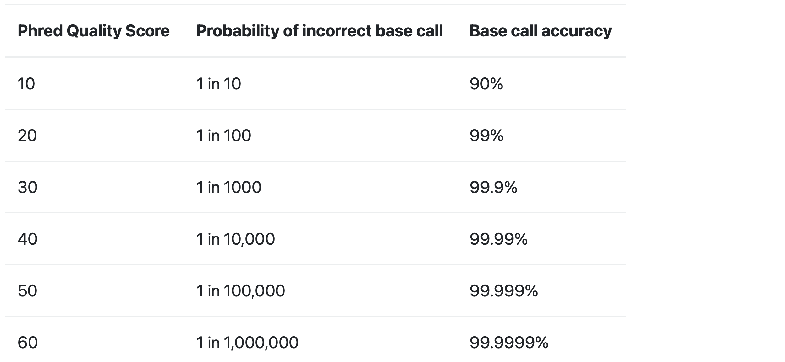
Diversi tipi di file
FASTQ format
I FASTQ file possono avere dimensioni molto grandi, per questo nella maggior parte dei casi non avrete a che fare con ilMioFile.fastq, ma con ilMioFile.fastq.gz.
Questo significa che il file è compresso, quindi non leggibile da un editor di testa senza prima essere de-compresso.
Diversi tipi di file
SAM/BAM format
Definizione
I file SAM (Sequence Alignment Map) sono file di testo creati originariamente per contenere le sequenze biologiche allineate ad una sequenza di riferimento (genoma).
- Il formato è stato sviluppato per il progetto 1000 Genome.
- Questo formato è largamente usato per le sequenze nucleotiche generate dalle tecnologie NGS.
- Nella maggior parte dei casi non vi troverete a che fare con un file SAM, ma con un file BAM
Diversi tipi di file
SAM/BAM format
Differenza tra SAM e BAM?
- In realtà nessuna! I due file sono identici nel contenuto
- In pratica il file SAM può essere letto da un editor di testo, mentre il file BAM no.
- Il BAM è un file binary, cioè machine-readable. È più compresso del file human-readable.
Diversi tipi di file
SAM/BAM format
I file SAM/BAM consistono in 2 parti una intestazione (header) e un allineamento.
- L’intestazione
- (se presente) dev’essere prima dell’allineamento
- Ogni riga dell’intestazione inizia con il simbolo “@”
- Una coppia di lettere che segue il simbolo “@” indica la sezione dell’intestazione
@RG ID:1 SM:C5926_BM_IonCode_0118
@PG ID:samtools PN:samtools VN:1.16.1 CL:samtools view -H C5926_BM_IonCode_0118.reassembled.bamDiversi tipi di file
SAM/BAM format
I file SAM/BAM consistono in 2 parti una intestazione (header) e un allineamento.
- L’allineamento
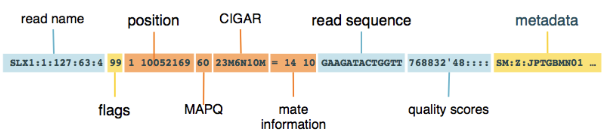
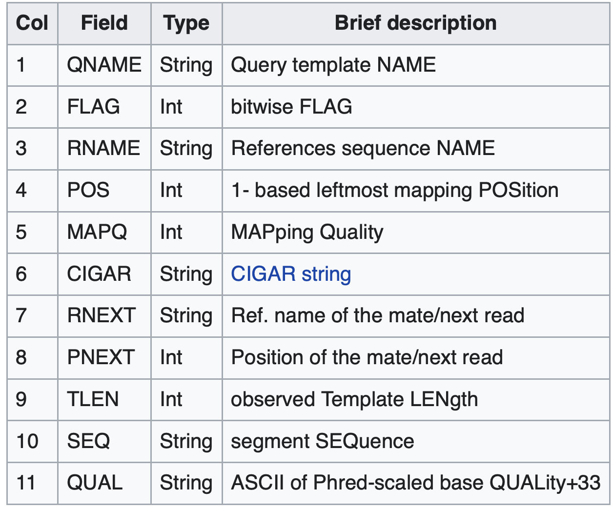
Diversi tipi di file
SAM/BAM format
FLAGS
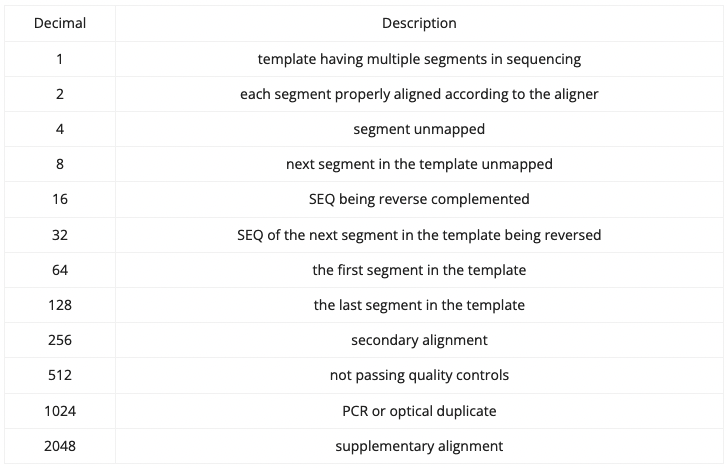
Diversi tipi di file
SAM/BAM format
CIGAR
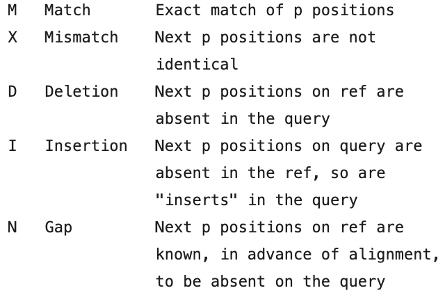
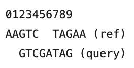
Diversi tipi di file
BED/GTF/GFF3 formats
Definizione
Questi sono i tre principali formati di annotazione. Ci sono molte somiglianze ma anche alcune fondamentali differenze.
- BED: permettono un solo livello di complessita, ogni caratteristica può essere divisa in diversi blocchi (linee del file)
- GTF: permettono 2 livelli di complessità, gli esoni possono essere raggruppati in trascritti e i trascritti in geni
- GFF3: permettono un numero arbitrari di livelli
Diversi tipi di file
BED
Definizione
I file BED (Browser Extensible Data) sono file di testo creati per descrivere caratteristiche del genoma.
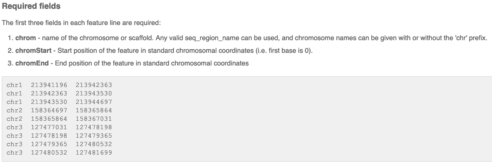
Diversi tipi di file
BED
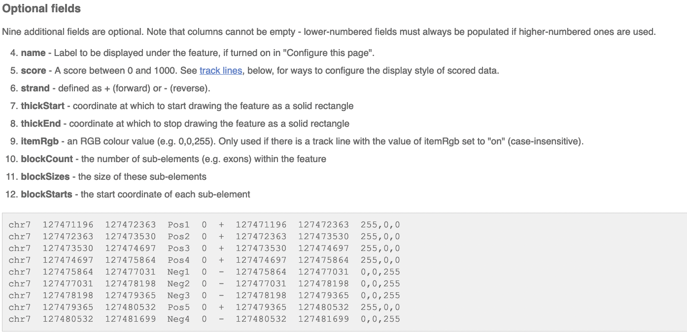
Diversi tipi di file
GTF format
Definizione
GFF2 or GTF (General Transfer Format) è un formato usato per descrivere due livelli di annotazione: geni e trascritti.
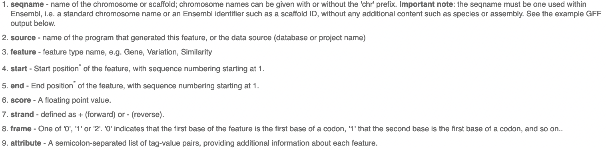
Diversi tipi di file
GTF format
Definizione
GFF2 or GTF (General Transfer Format) è un formato usato per descrivere due livelli di annotazione: geni e trascritti.
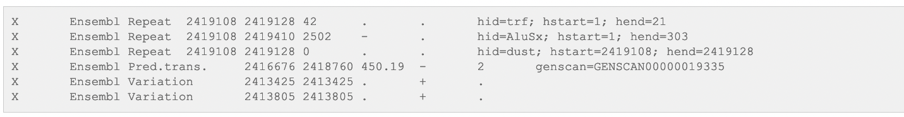
Diversi tipi di file
GFF3 format
Definizione
GFF3 (General Feature Format) è un file ti testo che contiene informazioni su ogni caratteristica delle sequenze nucleiche o aminiacidiche che descrive. CDS, microRNAs, binding domains, ORFs e molto altro possono essere gestite da questo formato
Campi
- Column 1: “seqid”
- Column 2: “source”
- Column 3: “type”
- Column 4:“start”
- Column 5: “end”
- Column 6: “score”
- Column 7: “strand”
- Column 8: “phase”
- Column 9: “attributes”
Diversi tipi di file
GFF3 format
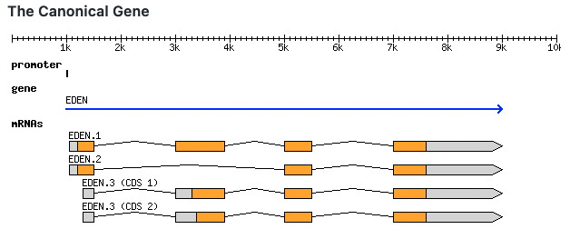
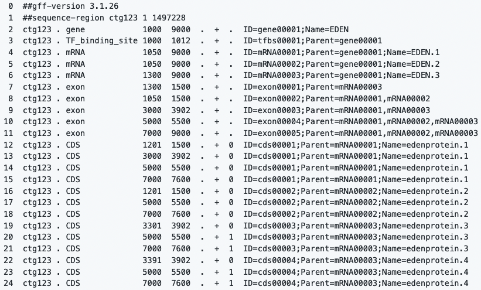
Software
Diversi Software
Terminal
DEMO
Diversi Software
Pre-alignment QC
Diversi Software
Trim/filter reads
Questo passaggio è importante per
rimuovere i primer adapters
Filtrare le reads di bassa qualità (se presenti)
La rimozione delle reads di bassa qualità semplifica l’analisi a valle
Diversi Software
Allineamento al genoma
Definizione
L’allineamenro delle reads al genoma permette di individuare le differenze tra le reads e il genoma di riferimento

Diversi Software
Allineamento al genoma
STAR
Spliced Transcripts Alignment to a Reference
STAR is an aligner designed to specifically address many of the challenges of RNA-seq data mapping
STAR requires a lot of computational power
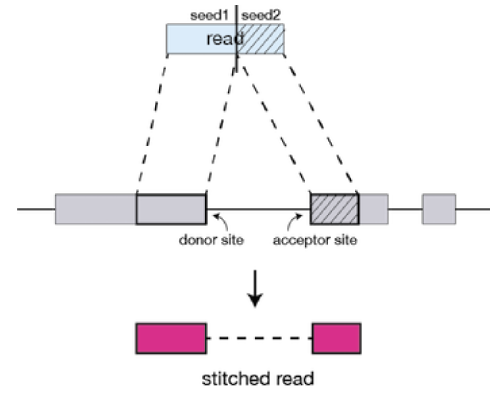
Diversi Software
Allineamento al genoma
Quasi mapping
Common to all of these tools is that base-to-base alignment of the reads is avoided, which is the time-consuming step
These lightweight alignment tools provide quantification estimates much faster than older tools (typically more than 20 times faster) with improvements in accuracy
These transcript expression estimates, often referred to as ‘pseudocounts’ or ‘abundance estimates’, can be aggregated to the gene level for use with differential gene expression tools like DESeq2
Diversi Software
Allineamento al genoma
Salmon
Salmon is a tool for wicked-fast transcript quantification from RNA-seq data
All you need are:
a FASTA file containing your reference transcripts
a (set of) FASTA/FASTQ file(s) containing your reads
Two strategies:
- mapping-based mode - alignment-based mode
Diversi Software
Allineamento al genoma
Salmon
mapping-based mode
Preparing transcriptome indices
> salmon index -t transcripts.fa.gz -i transcripts_index
Quantify
> salmon quant -i transcripts_index -l <LIBTYPE> -1 reads1.fq -2 reads2.fq -o transcripts_quant
Diversi Software
Allineamento al genoma
Salmon
alignment-based mode
Prepare your alignments using your favorite aligner
Quantify using Salmon
> salmon quant -t transcripts.fa.gz -l <LIBTYPE> -a aln.bam -o salmon_quant
Diversi Software
Allineamento al genoma
Salmon
Fragment Library Types
There are numerous library preparation protocols for RNA-seq
The library type string consists of three parts:
the relative orientation of the reads,
the strandedness of the library,
the directionality of the reads
Diversi Software
Allineamento al genoma
Salmon
Fragment Library Types
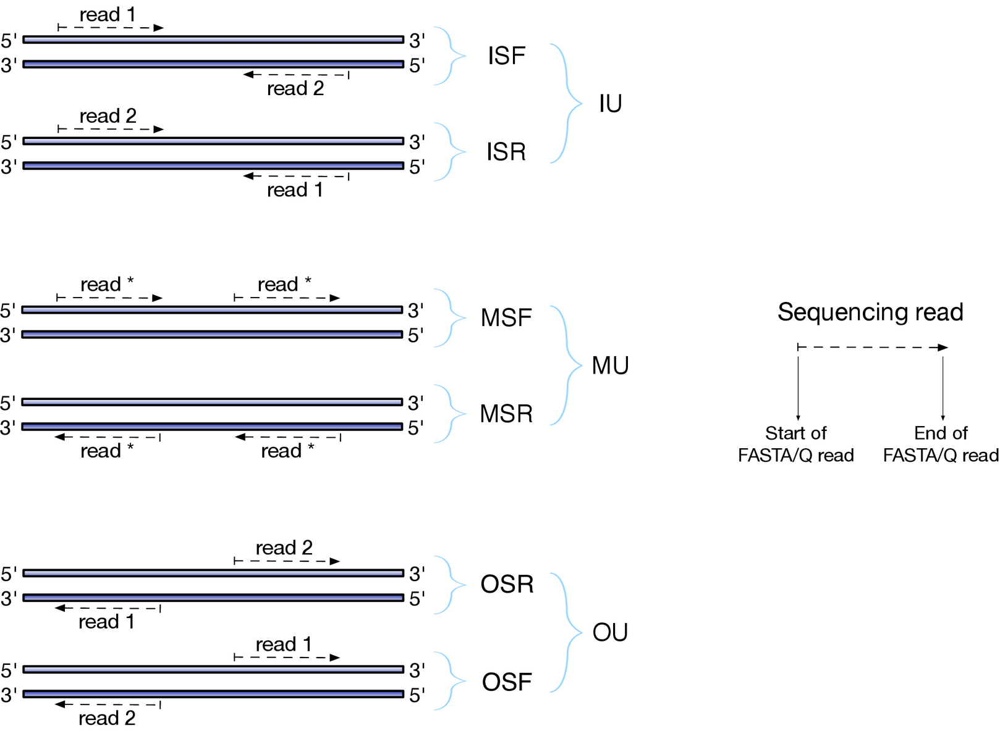
Diversi Software
Allineamento al genoma
Salmon
Salmon Output File Formats
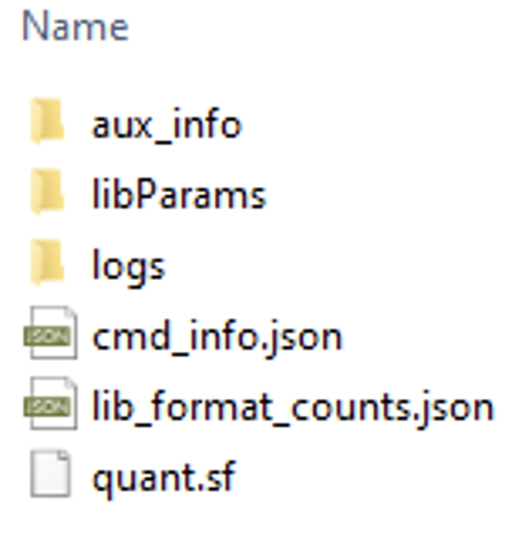
Diversi Software
Allineamento al genoma
Salmon
Salmon Output File Formats
Name — This is the name of the target transcript provided in the input transcript database (FASTA file).
Length — This is the length of the target transcript in nucleotides.
EffectiveLength — This is the computed effective length of the target transcript. It takes into account all factors being modeled that will effect the probability of sampling fragments from this transcript, including the fragment length distribution and sequence-specific and gc-fragment bias (if they are being modeled).
TPM — This is salmon’s estimate of the relative abundance of this transcript in units of Transcripts Per Million (TPM). TPM is the recommended relative abundance measure to use for downstream analysis.
NumReads — This is salmon’s estimate of the number of reads mapping to each transcript that was quantified. It is an “estimate” insofar as it is the expected number of reads that have originated from each transcript given the structure of the uniquely mapping and multi-mapping reads and the relative abundance estimates for each transcript.
Diversi Software
Differential Gene Expression (DGE)
Important
The goal of differential expression testing is to determine which genes are expressed at different levels between conditions.
These tools perform normalization and calculate the abundance of each gene expressed in a sample:
- ABSSeq a new RNA-Seq analysis method based on modelling absolute expression differences.
- ALDEx2 is a tool for comparative analysis of high-throughput sequencing data. ALDEx2 uses compositional data analysis and can be applied to RNAseq, 16S rRNA gene sequencing, metagenomic sequencing, and selective growth experiments.
- Alexa-Seq is a pipeline that makes possible to perform gene expression analysis, transcript specific expression analysis, exon junction expression and quantitative alternative analysis. Allows wide alternative expression visualization, statistics and graphs.
- ARH-seq – identification of differential splicing in RNA-seq data.
- ASC[56] - Ballgown
- BaySeq is a Bioconductor package to identify differential expression using next-generation sequencing data, via empirical Bayesian methods. There is an option of using the “snow” package for parallelisation of computer data processing, recommended when dealing with large data sets.
- GMNB[57] is a Bayesian method to temporal gene differential expression analysis across different phenotypes or treatment conditions that naturally handles the heterogeneity of sequencing depth in different samples, removing the need for ad-hoc normalization.
- BBSeq - BitSeq (Bayesian Inference of Transcripts from Sequencing Data) is an application for inferring expression levels of individual transcripts from sequencing (RNA-Seq) data and estimating differential expression (DE) between conditions.
- CEDER Accurate detection of differentially expressed genes by combining significance of exons using RNA-Seq.
- CPTRA The CPTRA package is for analyzing transcriptome sequencing data from different sequencing platforms. It combines advantages of 454, Illumina GAII, or other platforms and can perform sequence tag alignment and annotation, expression quantification tasks.
- casper is a Bioconductor package to quantify expression at the isoform level. It combines using informative data summaries, flexible estimation of experimental biases and statistical precision considerations which (reportedly) provide substantial reductions in estimation error.
- Cufflinks/Cuffdiff is appropriate to measure global de novo transcript isoform expression. It performs assembly of transcripts, estimation of abundances and determines differential expression (Cuffdiff) and regulation in RNA-Seq samples.[58]
- DESeq is a Bioconductor package to perform differential gene expression analysis based on negative binomial distribution.
- DEGSeq - Derfinder Annotation-agnostic differential expression analysis of RNA-seq data at base-pair resolution via the DER Finder approach.
- DEvis is a powerful, integrated solution for the analysis of differential expression data. Using DESeq2 as a framework, DEvis provides a wide variety of tools for data manipulation, visualization, and project management.
- DEXSeq is Bioconductor package that finds differential differential exon usage based on RNA-Seq exon counts between samples. DEXSeq employs negative binomial distribution, provides options to visualization and exploration of the results.
- DEXUS is a Bioconductor package that identifies differentially expressed genes in RNA-Seq data under all possible study designs such as studies without replicates, without sample groups, and with unknown conditions.[59] In contrast to other methods, DEXUS does not need replicates to detect differentially expressed transcripts, since the replicates (or conditions) are estimated by the EM method for each transcript.
- DGEclust is a Python package for clustering expression data from RNA-seq, CAGE and other NGS assays using a Hierarchical Dirichlet Process Mixture Model. The estimated cluster configurations can be post-processed in order to identify differentially expressed genes and for generating gene- and sample-wise dendrograms and heatmaps.[60]
- DiffSplice is a method for differential expression detection and visualization, not dependent on gene annotations. This method is supported on identification of alternative splicing modules (ASMs) that diverge in the different isoforms. A non-parametric test is applied to each ASM to identify significant differential transcription with a measured false discovery rate.
- EBSeq is a Bioconductor package for identifying genes and isoforms differentially expressed (DE) across two or more biological conditions in an RNA-seq experiment. It also can be used to identify DE contigs after performing de novo transcriptome assembly. While performing DE analysis on isoforms or contigs, different isoform/contig groups have varying estimation uncertainties. EBSeq models the varying uncertainties using an empirical Bayes model with different priors.
- EdgeR is a R package for analysis of differential expression of data from DNA sequencing methods, like RNA-Seq, SAGE or ChIP-Seq data. edgeR employs statistical methods supported on negative binomial distribution as a model for count variability.
- EdgeRun an R package for sensitive, functionally relevant differential expression discovery using an unconditional exact test.
- EQP The exon quantification pipeline (EQP): a comprehensive approach to the quantification of gene, exon and junction expression from RNA-seq data.
- ESAT The End Sequence Analysis Toolkit (ESAT) is specially designed to be applied for quantification of annotation of specialized RNA-Seq gene libraries that target the 5’ or 3’ ends of transcripts.
- eXpress performance includes transcript-level RNA-Seq quantification, allele-specific and haplotype analysis and can estimate transcript abundances of the multiple isoforms present in a gene. Although could be coupled directly with aligners (like Bowtie), eXpress can also be used with de novo assemblers and thus is not needed a reference genome to perform alignment. It runs on Linux, Mac and Windows.
- ERANGE performs alignment, normalization and quantification of expressed genes.
- featureCounts an efficient general-purpose read quantifier.
- FDM - FineSplice Enhanced splice junction detection and estimation from RNA-Seq data.
- GFOLD[61] Generalized fold change for ranking differentially expressed genes from RNA-seq data.
- globalSeq[62] Global test for counts: testing for association between RNA-Seq and high-dimensional data.
- GPSeq This is a software tool to analyze RNA-seq data to estimate gene and exon expression, identify differentially expressed genes, and differentially spliced exons.
- IsoDOT – Differential RNA-isoform Expression.
- Limma Limma powers differential expression analyses for RNA-sequencing and microarray studies.
- LPEseq accurately test differential expression with a limited number of replicates.
- Kallisto “Kallisto is a program for quantifying abundances of transcripts from RNA-Seq data, or more generally of target sequences using high-throughput sequencing reads. It is based on the novel idea of pseudoalignment for rapidly determining the compatibility of reads with targets, without the need for alignment. On benchmarks with standard RNA-Seq data, kallisto can quantify 30 million human reads in less than 3 minutes on a Mac desktop computer using only the read sequences and a transcriptome index that itself takes less than 10 minutes to build.”
- MATS Multivariate Analysis of Transcript Splicing (MATS).
- MAPTest provides a general testing framework for differential expression analysis of RNA-Seq time course experiment. Method of the pack is based on latent negative-binomial Gaussian mixture model. The proposed test is optimal in the maximum average power. The test allows not only identification of traditional DE genes but also testing of a variety of composite hypotheses of biological interest.[63]
- MetaDiff Differential isoform expression analysis using random-effects meta-regression.
- metaseqR is a Bioconductor package that detects differentially expressed genes from RNA-Seq data by combining six statistical algorithms using weights estimated from their performance with simulated data estimated from real data, either public or user-based. In this way, metaseqR optimizes the tradeoff between precision and sensitivity.[64] In addition, metaseqR creates a detailed and interactive report with a variety of diagnostic and exploration plots and auto-generated text.
- MMSEQ is a pipeline for estimating isoform expression and allelic imbalance in diploid organisms based on RNA-Seq. The pipeline employs tools like Bowtie, TopHat, ArrayExpressHTS and SAMtools. Also, edgeR or DESeq to perform differential expression.
- MultiDE - Myrna is a pipeline tool that runs in a cloud environment (Elastic MapReduce) or in a unique computer for estimating differential gene expression in RNA-Seq datasets. Bowtie is employed for short read alignment and R algorithms for interval calculations, normalization, and statistical processing.
- NEUMA is a tool to estimate RNA abundances using length normalization, based on uniquely aligned reads and mRNA isoform models. NEUMA uses known transcriptome data available in databases like RefSeq.
- NOISeq NOISeq is a non-parametric approach for the identification of differentially expressed genes from count data or previously normalized count data. NOISeq empirically models the noise distribution of count changes by contrasting fold-change differences (M) and absolute expression differences (D) for all the features in samples within the same condition.
- NPEBseq is a nonparametric empirical Bayesian-based method for differential expression analysis.
- NSMAP allows inference of isoforms as well estimation of expression levels, without annotated information. The exons are aligned and splice junctions are identified using TopHat. All the possible isoforms are computed by a combination of the detected exons.
- NURD an implementation of a new method to estimate isoform expression from non-uniform RNA-seq data.
- PANDORA An R package for the analysis and result reporting of RNA-Seq data by combining multiple statistical algorithms.
- PennSeq PennSeq: accurate isoform-specific gene expression quantification in RNA-Seq by modeling non-uniform read distribution.
- QuasR Quantify and Annotate Short Reads in R.
- RapMap A Rapid, Sensitive and Accurate Tool for Mapping RNA-seq Reads to Transcriptomes.
- recursiveCorPlot Correlation based clustering for RNA-seq data (+ ggplot corrplot-like interface - R-package: recursiveCorPlot).[65]
- RNAeXpress Can be run with Java GUI or command line on Mac, Windows, and Linux. It can be configured to perform read counting, feature detection or GTF comparison on mapped rnaseq data.
- Rcount Rcount: simple and flexible RNA-Seq read counting.
- rDiff is a tool that can detect differential RNA processing (e.g. alternative splicing, polyadenylation or ribosome occupancy).
- RNASeqPower Calculating samples Size estimates for RNA Seq studies. R package version.
- RNA-Skim RNA-Skim: a rapid method for RNA-Seq quantification at transcript-level.
- rSeq rSeq is a set of tools for RNA-Seq data analysis. It consists of programs that deal with many aspects of RNA-Seq data analysis, such as read quality assessment, reference sequence generation, sequence mapping, gene and isoform expressions (RPKMs) estimation, etc.
- RSEM - rQuant is a web service (Galaxy (computational biology) installation) that determines abundances of transcripts per gene locus, based on quadratic programming. rQuant is able to evaluate biases introduced by experimental conditions. A combination of tools is employed: PALMapper (reads alignment), mTiM and mGene (inference of new transcripts).
- Salmon is a software tool for computing transcript abundance from RNA-seq data using either an alignment-free (based directly on the raw reads) or an alignment-based (based on pre-computed alignments) approach. It uses an online stochastic optimization approach to maximize the likelihood of the transcript abundances under the observed data. The software itself is capable of making use of many threads to produce accurate quantification estimates quickly. It is part of the Sailfish suite of software, and is the successor to the Sailfish tool.
- SAJR is a java-written read counter and R-package for differential splicing analysis. It uses junction reads to estimate exon exclusion and reads mapped within exon to estimate its inclusion. SAJR models it by GLM with quasibinomial distribution and uses log likelihood test to assess significance.
- Scotty Performs power analysis to estimate the number of replicates and depth of sequencing required to call differential expression.
- Seal alignment-free algorithm to quantify sequence expression by matching kmers between raw reads and a reference transcriptome. Handles paired reads and alternate isoforms, and uses little memory. Accepts all common read formats, and outputs read counts, coverage, and FPKM values per reference sequence. Open-source, written in pure Java; supports all platforms with no recompilation and no other dependencies. Distributed with BBMap. (Seal - Sequence Expression AnaLyzer - is unrelated to the SEAL distributed short-read aligner.)
- semisup[66] Semi-supervised mixture model: detecting SNPs with interactive effects on a quantitative trait
- Sleuth is a program for analysis of RNA-Seq experiments for which transcript abundances have been quantified with kallisto.
- SplicingCompass differential splicing detection using RNA-Seq data.
- sSeq The purpose of this R package is to discover the genes that are differentially expressed between two conditions in RNA-seq experiments.
- StringTie is an assembler of RNA-Seq alignments into potential transcripts. It uses a novel network flow algorithm as well as an optional de novo assembly step to assemble and quantitate full-length transcripts representing multiple splice variants for each gene locus. It was designed as a successor to Cufflinks (its developers include some of the Cufflinks developers) and has many of the same features.
- TIGAR Transcript isoform abundance estimation method with gapped alignment of RNA-Seq data by variational Bayesian inference.
- TimeSeq Detecting Differentially Expressed Genes in Time Course RNA-Seq Data.
- TPMCalculator[67] one-step software to quantify mRNA abundance of genomic features.
- WemIQ is a software tool to quantify isoform expression and exon splicing ratios from RNA-seq data accurately and robustly.
From: https://en.wikipedia.org/wiki/List_of_RNA-Seq_bioinformatics_tools
Diversi Software
Differential Gene Expression (DGE)
The count data used for DGE represents the number of sequence reads that originated from a particular gene.
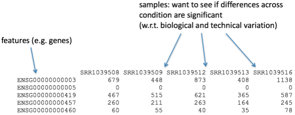
Diversi Software
Differential Gene Expression (DGE)
Normalization
The count data needs to be normalized to account for differences in library sizes and RNA composition between samples
Important
Normalization is essential for differential expression analyses, and also for exploratory data analysis, visualization of data, and whenever you are exploring or comparing counts between or within samples
Diversi Software
Differential Gene Expression (DGE)
Normalization
| Normalization method | Description | Accounted factors | Recommendations for use |
| CPM (counts per million) | counts scaled by total number of reads | sequencing depth | gene count comparisons between replicates of the same samplegroup; NOT for within sample comparisons or DE analysis |
| TPM (transcripts per kilobase million) | counts per length of transcript (kb) per million reads mapped | sequencing depth and gene length | gene count comparisons within a sample or between samples of the same sample group; NOT for DE analysis |
| RPKM/FPKM (reads/fragments per kilobase of exon per million reads/fragments mapped) | similar to TPM | sequencing depth and gene length | gene count comparisons between genes within a sample; NOT for between sample comparisons or DE analysis |
| DESeq2’s median of ratios [1] | counts divided by sample-specific size factors determined by median ratio of gene counts relative to geometric mean per gene | sequencing depth and RNA composition | gene count comparisons between samples and for DE analysis; NOT for within sample comparisons |
Diversi Software
Differential Gene Expression (DGE)
Quality Control at SAMPLE level
Which samples are similar to each other, which are different?
Does this fit to the expectation from the experiment’s design?
What are the major sources of variation in the dataset?
Diversi Software
Differential Gene Expression (DGE)
Quality Control at SAMPLE level
Log2-transformed normalized counts are used to assess similarity between samples using:
- Principal Component Analysis (PCA)
- Hierarchical clustering
- Principal Component Analysis (PCA)
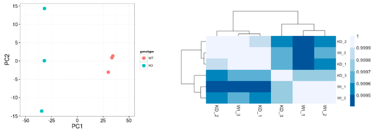
Diversi Software
Differential Gene Expression (DGE)
Quality Control at GENE level
Important
Prior to differential expression analysis it is beneficial to omit genes that have little or no chance of being detected as differentially expressed
Genes with zero counts in all samples
Genes with an extreme count outlier
Genes with a low mean normalized counts
Diversi Software
Differential Gene Expression (DGE)
Quality Control at GENE level
Important
Prior to differential expression analysis it is beneficial to omit genes that have little or no chance of being detected as differentially expressed
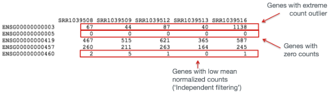
Diversi Software
Differential Gene Expression (DGE)
Quality Control at GENE level
Important
Prior to differential expression analysis it is beneficial to omit genes that have little or no chance of being detected as differentially expressed
DESeq2 will perform this filtering by default,
however other DE tools will not
Diversi Software
Differential Gene Expression (DGE)
DESeq2
Modeling raw count for each gene
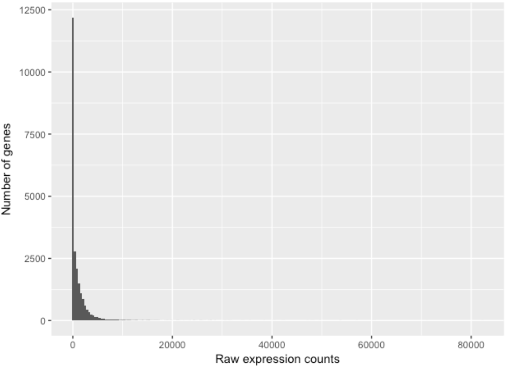
Diversi Software
Differential Gene Expression (DGE)
DESeq2
Modeling raw count for each gene
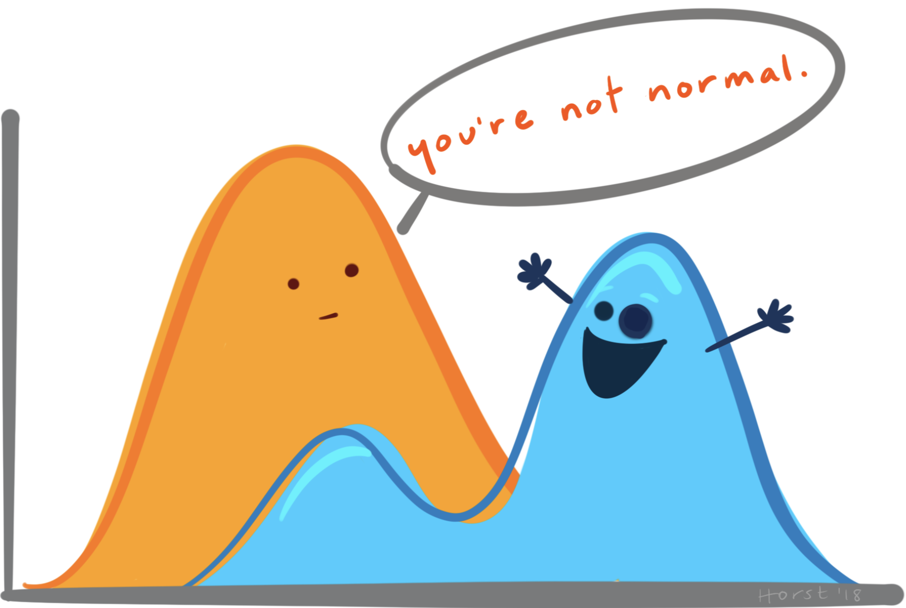
Diversi Software
Differential Gene Expression (DGE)
DESeq2
Modeling raw count for each gene
So what do we use for RNA-seq count data?
Diversi Software
Differential Gene Expression (DGE)
DESeq2
Modeling raw count for each gene
DESeq2 uses the negative binomial model
“All models are wrong, but some are useful”.
George E. P. Box
Diversi Software
Differential Gene Expression (DGE)
DESeq2
The DESeqDataSet
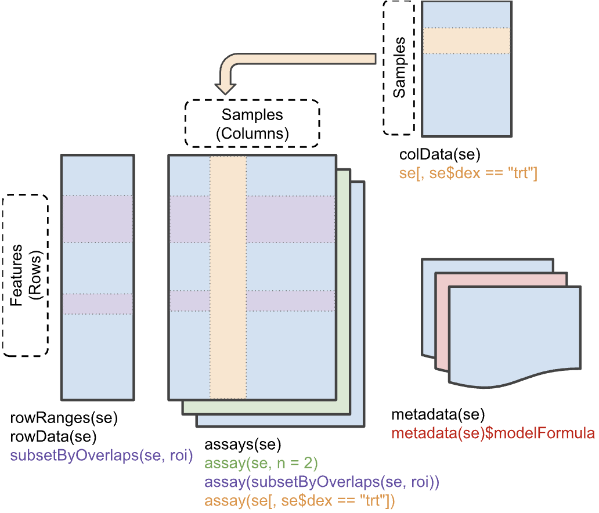
Diversi Software
Differential Gene Expression (DGE)
DESeq2
SummarisedExperiment
nrows <- 200
ncols <- 6
counts <- matrix(runif(nrows * ncols, 1, 1e4), nrows)
rowRanges <- GRanges(rep(c("chr1", "chr2"), c(50, 150)),
IRanges(floor(runif(200, 1e5, 1e6)), width=100),
strand=sample(c("+", "-"), 200, TRUE),
feature_id=sprintf("ID%03d", 1:200))
colData <- DataFrame(Treatment=rep(c("ChIP", "Input"), 3),
row.names=LETTERS[1:6])
se <- SummarizedExperiment(assays=list(counts=counts),
rowRanges=rowRanges, colData=colData)
assay(se)
rowData(se)
rowRanges(se)
colData(se)
rowData(se)$marco <- FALSE
rowData(se)$marco[c(1,2,5,200)] <- TRUE
assay(se[rowData(se)$marco == TRUE, ])
colData(se[,colData(se)$Treatment == "Input"])
se[rowData(se)$marco == TRUE, colData(se)$Treatment == "Input"]Domande?